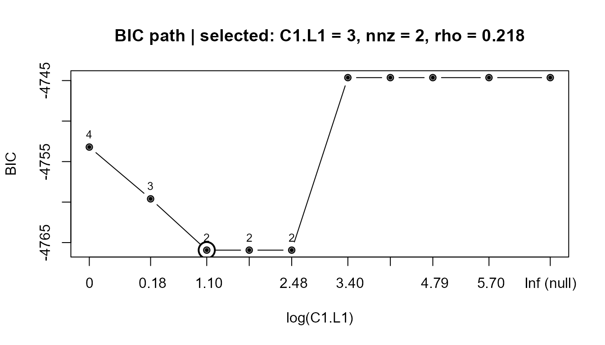

Overview
NMF-FFB describes non-negative outcomes \(Y_1\) (\(P_1 \times N\)) by a small number of non-negative factors driven by covariates \(Y_2\) (\(P_2 \times N\)), and asks whether the outcomes also feed back into those factors:
\[ Y_1 = X B + \mathcal{E}, \qquad B = \Theta_1 Y_1 + \Theta_2 Y_2 + U , \]
with \(X \ge 0\) the basis, \(\Theta_2 \ge 0\) the exogenous coefficients, \(\Theta_1 \ge 0\) the feedback, \(U \sim N(0, \Phi)\) a unit-level random effect and \(\mathcal{E} \sim N(0, \Psi)\) item noise. With \(A = X\Theta_1\) the equilibrium is \(Y_1 = (I - A)^{-1}(X\Theta_2 Y_2 + XU + \mathcal{E})\), which exists when the spectral radius \(\rho(A) < 1\).
Two facts shape everything below.
Feedback cannot be found by prediction. The equilibrium mapping \(M = (I - X\Theta_1)^{-1}X\Theta_2\) is reproduced exactly by a feed-forward model with exogenous matrix \(L_Q\Theta_2\). The two models predict \(Y_1\) from \(Y_2\) identically, so no cross-validation and no test-sample error can prefer one. What separates them is the conditional covariance: with feedback, the disturbances propagate around the loop.
An outcome must not feed back into a factor on which it has
more than a negligible loading. Without a restriction the
factor-level directions \(\Theta_1 = a X^\top
\Psi^{-1}\) are observationally equivalent to a change in \(\Theta_2\) and \(\Phi\), so they are not identified. The
default C1.restriction = "union" blocks, for each outcome,
the factor it loads on most and every factor on which it loads at least
C1.restriction.threshold.
The workflow
One function per step:
ecv <- nmf.ffb.ecv(Y1, Y2, rank = 1:5) # 1. choose Q
fit <- nmf.ffb(Y1, Y2, rank = Q) # 2. estimate; BIC selects the support
tst <- nmf.ffb.test(fit, Y1, Y2) # 3. test the feed-forward null
dgn <- nmf.ffb.diagnostics(fit) # 4. cycles, spectral radius, best supports
inf <- nmf.ffb.inference(fit, Y1, Y2) # 5. intervals for the retained entriesThe order matters, and step 3 is the only inferential step. What it tests is
\[ H_0: \text{the distribution of } Y_1 \mid Y_2 \text{ belongs to the feed-forward family} \qquad\text{against}\qquad H_1: \text{it does not.} \]
Note what \(H_0\) is not. It is not the single point \(\Theta_1 = 0\). The map from parameters to distributions is not injective, so the null family is larger than that point: a feed-forward model with a different \(\Theta_2\) and \(\Phi\) reproduces the mean and the covariance of some models with \(\Theta_1 \ne 0\). Rejection therefore says “no feed-forward model with correlated factors reproduces these first two moments”, not “\(\Theta_1 \ne 0\)”. Section 1 builds one data set of each kind so that both outcomes can be seen. Section 6 explains why reading step 4 before step 3 is a mistake.
1. Data
We use two simulated data sets, so that the truth is known and the two outcomes of the procedure can both be shown. Both have \(P_1 = 6\) outcomes loading on \(Q = 2\) factors and \(P_2 = 3\) covariates.
library(nmfkc)
set.seed(20260909)
N <- 600; P1 <- 6; P2 <- 3; Q <- 2
X.true <- matrix(0.02, P1, Q) # parts-based basis: 3 outcomes per factor
X.true[1:3, 1] <- runif(3, 0.7, 1.3)
X.true[4:6, 2] <- runif(3, 0.7, 1.3)
X.true <- sweep(X.true, 2, colSums(X.true), "/")
rownames(X.true) <- paste0("y", 1:P1); colnames(X.true) <- paste0("F", 1:Q)
T2.true <- matrix(0, Q, P2); T2.true[1, 1] <- 1.2; T2.true[2, 2] <- 0.9; T2.true[1, 3] <- 0.5
T1.true <- matrix(0, Q, P1); T1.true[2, 1] <- 0.8; T1.true[1, 4] <- 0.6 # y1 -> F2, y4 -> F1
Y2 <- matrix(runif(P2 * N), P2, N); rownames(Y2) <- paste0("x", 1:P2)
simulate_ffb <- function(T1, feedback.in.loop = TRUE) {
U <- matrix(rnorm(Q * N, sd = 0.3), Q, N)
E <- matrix(rnorm(P1 * N, sd = 0.1), P1, N)
L <- solve(diag(P1) - X.true %*% T1)
if (feedback.in.loop) {
Y1 <- L %*% (X.true %*% (T2.true %*% Y2 + U) + E) # disturbances inside the loop
} else {
Y1 <- (L %*% X.true %*% T2.true) %*% Y2 + X.true %*% U + E # added after it
}
Y1 <- pmax(Y1, 0); rownames(Y1) <- rownames(X.true); Y1
}
Y1.H1 <- simulate_ffb(T1.true, feedback.in.loop = TRUE) # H1 is true
Y1.H0 <- simulate_ffb(T1.true, feedback.in.loop = FALSE) # H0 is trueBoth are generated from the same \(\Theta_1\). The difference is where the disturbances enter, and that is what decides which hypothesis holds.
-
Y1.H1: \(U\) and \(\mathcal{E}\) enter inside the loop, so they are propagated by \((I - X\Theta_1)^{-1}\). The conditional covariance carries the loop, no feed-forward model reproduces it, and \(H_1\) is true. -
Y1.H0: the same disturbances are added after the loop. The conditional mean is unchanged, but the covariance is \(X\Phi X^\top + \Psi\), exactly what the feed-forward model with exogenous matrix \(L_Q\Theta_2\) gives. The distribution lies in the null family, so \(H_0\) is true — even though \(\Theta_1 \ne 0\) in the code that generated it.
Y1.H0 is the interesting one: in the parameter space it
is a point with feedback, but as a distribution it is indistinguishable
from no feedback. There is nothing to detect, and the procedure should
say so.
2. Choosing the number of factors
ecv <- nmf.ffb.ecv(Y1.H1, Y2, rank = 1:4, nfolds = 5, seed = 1)
#> Performing Element-wise CV for Q = 1,2,3,4 (5-fold)...
data.frame(Q = ecv$rank, ECV = round(ecv$objfunc, 4))
#> Q ECV
#> Q=1 1 0.0235
#> Q=2 2 0.0206
#> Q=3 3 0.0206
#> Q=4 4 0.0206
Q0 <- ecv$rank[which.min(ecv$objfunc)]
Q0
#> [1] 2Held-out entries of \(Y_1\) are predicted from the remaining ones, so this measures how well a \(Q\)-factor non-negative basis describes the outcomes – which is what \(Q\) is for. It says nothing about feedback, by the first fact above.
3. Fitting
nmf.ffb() estimates the basis with nmfkc(),
derives the exclusion restriction from it, fits the feed-forward null
and the full feedback model by FIML, follows an \(L_1\) path, and refits each distinct
support without the penalty; BIC over those supports selects one.
fit <- nmf.ffb(Y1.H1, Y2, rank = Q0)
round(fit$X, 3) # estimated basis
#> Factor1 Factor2
#> y1 0.283 0.000
#> y2 0.336 0.000
#> y3 0.338 0.000
#> y4 0.009 0.351
#> y5 0.009 0.336
#> y6 0.024 0.312
round(fit$C1, 3) # selected feedback (Theta1), Q x P1
#> y1 y2 y3 y4 y5 y6
#> Factor1 0.000 0 0 0.705 0 0
#> Factor2 0.656 0 0 0.000 0 0
c(rho = round(fit$XC1.radius, 3), LR = round(fit$LR[["full"]], 2), df = fit$LR.df)
#> rho LR df.full df.selected
#> 0.218 34.160 6.000 2.000The two retained entries should be y1 -> F2 and
y4 -> F1, the truth.
The restriction it worked under is on the object, as the rule that produced it and as the matrix of entries left free:
fit$C1.restriction # the rule
#> [1] "union"
fit$C1.free # 1 = free, 0 = blocked because the outcome loads there
#> y1 y2 y3 y4 y5 y6
#> Factor1 0 0 0 1 1 1
#> Factor2 1 1 1 0 0 0Every entry blocked here is one the likelihood is not allowed to use,
so the degrees of freedom of the test are sum(fit$C1.free),
not \(Q P_1\).
plot() draws the BIC path: the line follows the smallest
BIC at each penalty, every proposal is a grey point, the number above
each is how many entries that support keeps, and the circled point is
the selected penalty. There is no objective trace to plot for a
likelihood fit – its optimizer is L-BFGS-B.
plot(fit)
print(fit) reports both stages separately, because they
are two optimizers: iter / maxit and epsilon
are the stage-1 NMF that produced the basis, and fiml n / m
is the L-BFGS-B of the selected fit. converged is
TRUE only if both converged.
fit
#>
#> Call:
#> nmf.ffb(Y1 = Y1.H1, Y2 = Y2, rank = Q0)
#>
#> Model: Y1(6,600)~X(6,2)[C1(2,6)Y1+C2(2,3)Y2]
#> Convergence: 332 / 5000 (converged) epsilon = 1e-06 fiml 54 / 3000
#> Objective: -2437
#>
#> Use coef() for the coefficient matrix, summary() for diagnostics.4. Is the feed-forward model enough?
This is the only inferential step. The likelihood ratio has no \(\chi^2\) null distribution – \(\Theta_1 \ge 0\) puts the null on a boundary and the support is chosen from the same data – so it is calibrated by a parametric bootstrap from the fitted feed-forward null. The default calibration re-runs the whole procedure on every replicate: the basis is re-estimated, the restriction is re-derived from it, and the selection follows.
When \(H_1\) is true the test should reject:
## B = 1000 in practice; kept small here so the vignette builds quickly
tst.H1 <- nmf.ffb.test(fit, Y1.H1, Y2, B = 50, seed = 1)
c(p = round(tst.H1$LR.p.boot[["full"]], 3),
null.q95 = round(tst.H1$LR.null.quantile[["full"]], 2),
selects.under.null = tst.H1$prob.select.null,
restr.moves = round(tst.H1$C1.restriction.change.rate, 2))
#> p null.q95 selects.under.null restr.moves
#> 0.02 10.47 0.04 0.00When \(H_0\) is true it should not, and BIC should retain nothing — although the data were generated with the same non-zero \(\Theta_1\):
fit.H0 <- nmf.ffb(Y1.H0, Y2, rank = Q0)
tst.H0 <- nmf.ffb.test(fit.H0, Y1.H0, Y2, B = 50, seed = 1)
c(nnz = sum(fit.H0$C1 > 1e-3),
p = round(tst.H0$LR.p.boot[["full"]], 3),
selects.under.null = tst.H0$prob.select.null)
#> nnz p selects.under.null
#> 0.000 0.882 0.080Read prob.select.null and
C1.restriction.change.rate alongside the p-value.
They say whether the exclusion restriction is determined well enough for
the test to mean anything: if the dominant factor of an outcome moves
from replicate to replicate, a blocked entry becomes free and a feedback
coefficient can absorb loading structure. A large
prob.select.null with a wide null distribution is the
signature of a data set in which the procedure finds feedback whether or
not there is any – report it and stop, rather than reporting the
p-value alone.
If the null is not rejected, stop here and report NMF-FF.
5. What the feedback looks like
dgn <- nmf.ffb.diagnostics(fit)
dgn$top # the 3 best distinct supports: order, nnz, rho, BIC, dBIC
#> order nnz rho BIC dBIC
#> 1 1 2 0.2178742 -4765.930 0.000000
#> 2 2 3 0.2209737 -4759.601 6.329209
#> 3 3 4 0.2216327 -4753.209 12.720864
round(dgn$log.N, 2) # what one extra free entry costs in BIC
#> [1] 6.4
dgn$nested # do they form a chain under inclusion?
#> [1] TRUE
dgn$core # entries common to all three
#> y1 y2 y3 y4 y5 y6
#> Factor1 0 0 0 1 0 0
#> Factor2 1 0 0 0 0 0
dgn$cycles$rho # spectral radius; 0 with a non-empty support = a cascade
#> [1] 0.2178742
dgn$cycles$cycle # which factors lie on a cycle
#> Factor1 Factor2
#> 1 1Adding one free entry costs \(\log N\) in BIC, and a difference below about 2 does not distinguish one support from another (Kass and Raftery 1995, p. 777): the inadequacy of the feed-forward family can be settled while the composition of the feedback is not. When the best supports form a chain under inclusion their intersection is the part the criterion does not put in doubt; when they do not, no single support should be read off.
omega reports how much of the fitted \(\Theta_1\) lies in the factor-level family
that is not identified, against its reference value:
6. Why the test comes before the spectral radius
The unpenalized \(\hat\rho\) is biased upwards under the null, because the likelihood is nearly flat along the unidentified directions. The \(\hat\rho\) of the BIC-selected model is not:
c(unpenalized = round(fit.H0$full$XC1.radius, 3), # on the data where H0 is true
selected = round(fit.H0$XC1.radius, 3))
#> unpenalized selected
#> 0.063 0.000Reading \(\hat\rho\) first would suggest a loop in data that contain none. Read it only after the test has been passed, and treat a positive value as a lower bound: BIC keeps too few entries to close the loop when the feedback is weak.
7. Intervals for the retained entries
After the null has been rejected, nmf.ffb.inference()
gives bootstrap intervals for the entries of the selected
model, with the basis and the support held fixed. These describe the
sampling variability of the retained coefficients, not the evidence for
retaining them – an interval that excludes zero is not by itself a
finding.
inf <- nmf.ffb.inference(fit, Y1.H1, Y2, B = 50, seed = 1)
subset(inf$coefficients, Type == "C1" & Estimate > 0,
select = c(Basis, Covariate, Estimate, CI_low, CI_high, support_rate))
#> Basis Covariate Estimate CI_low CI_high support_rate
#> 2 Factor2 y1 0.6556273 0.4892408 0.9271971 1
#> 7 Factor1 y4 0.7053569 0.5062039 1.1669547 18. Path diagrams
dot_ff <- nmf.ffb.DOT(fit, model = "null", threshold = 0.05)
dot_ffb <- nmf.ffb.DOT(fit, model = "selected", threshold = 0.05)
# plot(dot_ff); plot(dot_ffb) # requires DiagrammeRRunning the bootstrap in parallel
Both bootstraps take cores (or ncores),
defaulting to getOption("mc.cores", 1L) as elsewhere in the
package. With \(B = 1000\) this is
worth setting:
options(mc.cores = 8)
tst <- nmf.ffb.test(fit, Y1.H1, Y2, B = 1000)
inf <- nmf.ffb.inference(fit, Y1.H1, Y2, B = 1000)Appendix: the legacy estimator
method = "mu" is the multiplicative-update estimator of
the first version of this work, kept for reproducibility. It minimizes a
squared error in the structural form and cannot recover \(\Theta_1\), for the reason in the Overview:
it fits the mean, and the mean does not identify feedback.
fit_mu <- nmf.ffb(Y1.H1, Y2, rank = Q0, method = "mu", maxit = 500,
C1.L1 = 1, C2.L1 = 0.1)C1.L1 and C2.L1 are the L1 penalties of
that estimator and belong to it alone. Under
method = "fiml" the penalty on \(\Theta_1\) is the path
C1.L1.path, swept with the support chosen by BIC, and \(\Theta_2\) is unpenalized; passing
C1.L1 to a likelihood fit warns and does nothing.